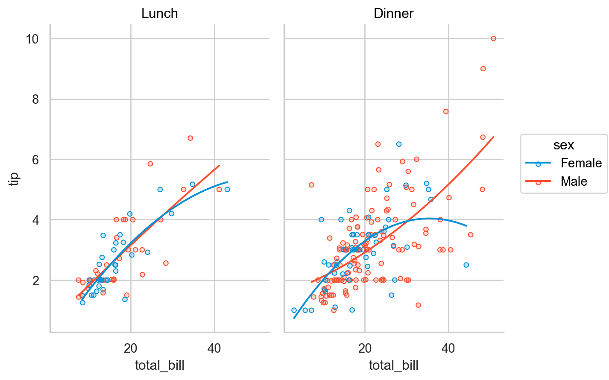
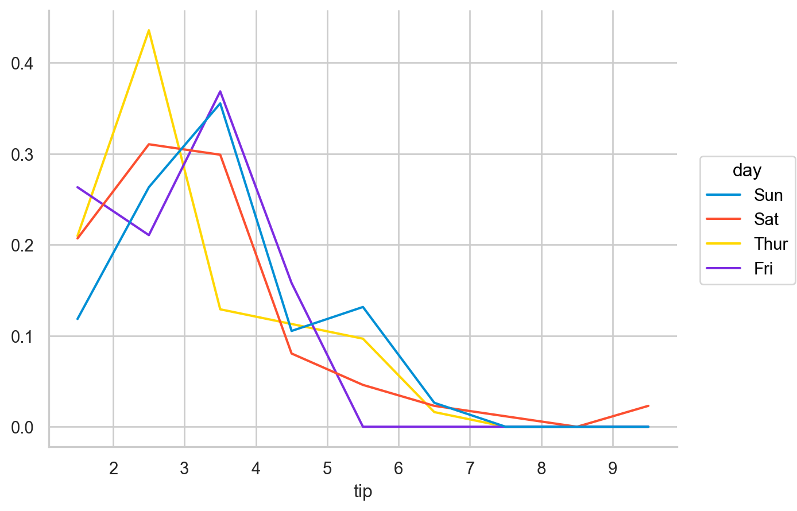
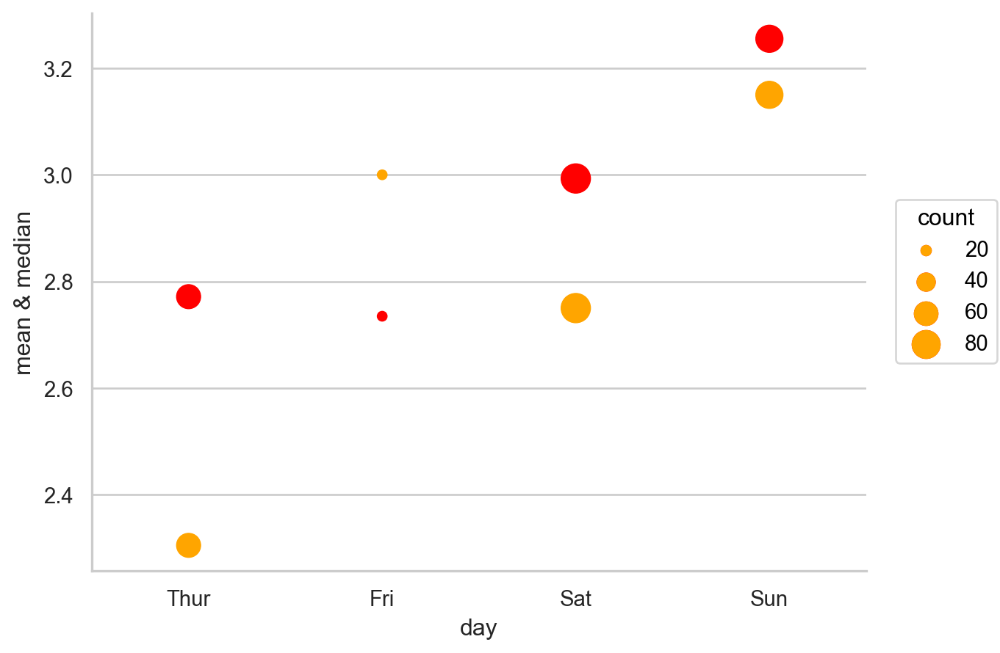
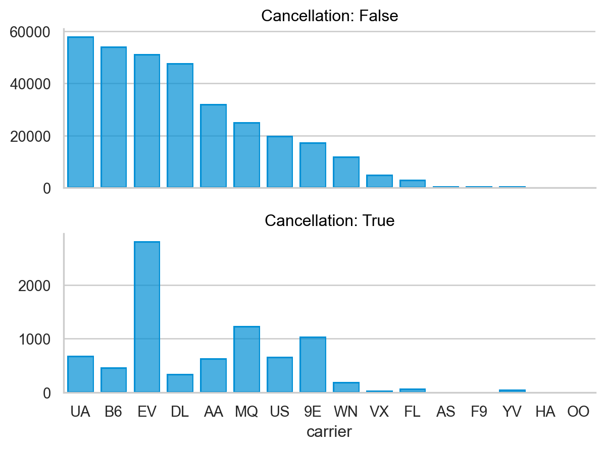
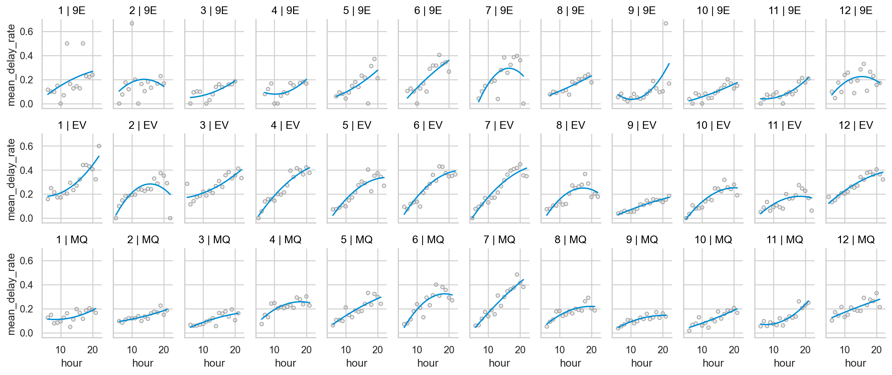
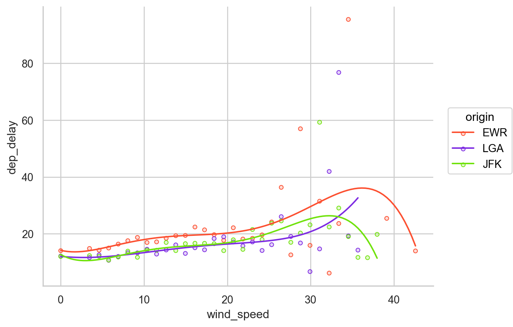
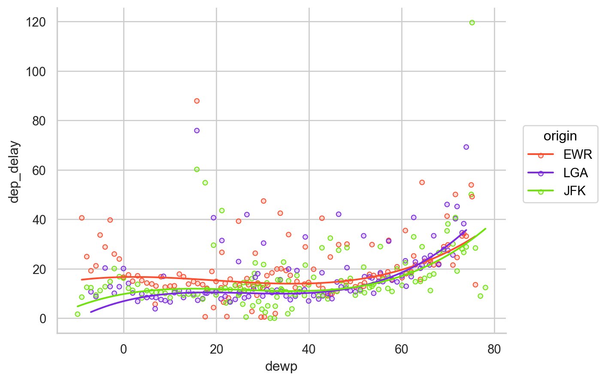

# numerical calculation & data framesimport numpy as npimport pandas as pd# visualizationimport matplotlib.pyplot as pltimport seaborn as snsimport seaborn.objects as so# statisticsimport statsmodels.api as sm# pandas optionspd.options.display.float_format ='{:.2f}'.format# pd.reset_option('display.float_format')pd.options.display.max_rows =7pd.set_option("mode.copy_on_write", True) # pandas 2.0.0
총점 225
A. 다음은 어느 웨이터의 팁에 관한 tips 데이터를 이용한 질문입니다.
total_bill: 음식값($)
tip: 팁($)
sex: 팁을 준 사람의 성별
smoker: 테이블에 흡연자 유무
day: 요일
time: 점심/저녁 시간
size: 테이블의 손님 수
# load a datasettips = sns.load_dataset("tips")
A-1. 점심, 저녁 때에 따른 식사비와 팁의 관계를 알아보기 위해 다음과 같은 시각화를 위한 코드를 짜보세요. (5)
fitted line은 2차 다항함수로 fit 시키세요.

A-2. 요일에 따른 팁의 분포를 보기 위한 다음과 같은 시각화를 위한 코드를 짜보세요. (10)
binwidth는 1($1)로 설정하세요.
y축은 팁의 비율(proportion)로 표시하세요.
각 요일 내에서의 비율이 되도록 하세요. (즉, 요일별로 높이의 합이 1)

A-3. 요일에 따른 팁의 분포가 성별과 흡연자 유무에 따라 다른가를 보기 위한 다음과 같은 시각화를 위한 코드를 짜보세요. (10)
A-4. 요일에 따른 팁의 평균(mean), 중앙값(median), 값의 개수(count)를 함께 보기 위해
1) 요일에 따른 세 통계치를 groupby를 이용해 다음과 같이 DataFrame으로 구한 후, (5)
day mean median count
0 Thur . . .
1 Fri . . .
2 Sat . . .
3 Sun . . .
2) (1)의 결과를 이용해 다음과 같이 시각화해보세요. (디테일은 무시) (15)
median은 오렌지 색(orange)으로, mean은 빨강색(red)로 표시하고, 점의 크기에 count를 mapping하세요.
점의 크기는 .scale(pointsize=(5, 15))를 활용해서 조정하세요.
목요일에 median과 mean이 다른 요일에 비해 큰 차이가 나는데 그 의미를 팁을 어떻게 받았을지를 고려해서 기술해보세요.

A-5. 웨이터로서 서빙하는 강도가 테이블의 손님 수에 비례한다고 가정합니다. 예를 들어, 1명 손님(table size 1) 테이블을 서빙하는데 비해 5명 손님(table size 5) 테이블을 서빙하는데 5배로 힘들다고 가정합니다. 웨이터가 노동 대비 팁을 최대로 받고자 하는데, 즉, 손님 한명 당 팁을 얼마 받게 되는지를 계산하여 (팁은 한 테이블 당 한번 받습니다.) 언제 몇 명의 손님 테이블을 서빙할 때, 노력 대비 최대의 팁을 얻게 될지에 대해서 다음 과정을 통해 분석하고 간단히 결론을 내려보세요. (주말 여부와 점심/저녁 여부에 따라 살펴봅니다.)
1) “주말(토,일) 여부”에 대한 변수(weekend)와 “한 손님 당 팁”에 해당하는 변수(tip_per_person)을 추가하고, (5)
(주의: tip.size 사용불가, tip["size"]으로 사용)
# total_bill tip sex smoker day time size weekend tip_per_person# 0 . . . . . . . . .# 1 . . . . . . . . .# 2 . . . . . . . . ....
2) 주말여부, 점심/저녁 여부, 테이블 사이즈의 따른 “한 손님 당 팁”의 평균값을 DataFrame으로 구한 후, (5)
B-1. 항공사(carrier)별로 1) 실제 출항한 항공편의 수와 2) 결항된 항공편의 수를 크기 순으로 다음과 같이 시각화해보세요. (디테일은 무시) (15)
결항된 항공편은 dep_delay값이 missing인 경우로 정의하고,
결항된 항공편을 표시하는 컬럼(cancel)을 만든 후,
항공편의 수를 따로 구하지 말고 seaborn.objects로 직접 시각화해보세요.
Bar의 표시 순서는 결항여부와 상관없이 항공편 수가 많은 항공사 순으로 하세요.
.share(y=False)를 이용해 y축의 눈금이 변하도록 하세요.

B-2. 위 플랏에서 결항된 항공편이 많은 상위 3개의 항공사만로 flights 데이터를 필터링하여, 다음과 같은 것을 알아봅니다.
수업 과제에서 대략 하루 중 오전부터 시간이 지남에 따라 항공편의 지연이 증가하는 것을 보았습니다. 이번에는 항공사별로 시간대(hour)에 따른 도착 지연 여부의 비율이 달(month)에 따라 변화하는지를 보고자 합니다.
1) 30분 넘게 도착이 지연되었는지 여부(즉, arr_delay > 30의 여부)를 표시하는 변수를 만든 후, 항공사(carrier), 달(month), 시간(hour)에 따른 30분 이상 도착 지연된 항공편의 비율(즉, arr_delay > 30인 항공편의 비율)을 다음과 같은 형태로 구합니다. (10)
2) 이를 이용하여, 대략 다음과 같이 column에 달(month), row에 항공사(carrier)를 facetting하여 시각화를 구한 후 (디테일은 무시), 눈에 띄는 패턴에 대해 “대략” 기술해보세요. (하루 중 시간이 지남에 따라 지연율이 증가하는 경향을 중심으로) (10)
fitted line은 3차 다항함수로 합니다.
.layout(size=(14, 6))를 추가하여, 플랏의 크기를 조절하세요.

B-3. 출발지연(dep_delay)이 날씨에 의해 얼마나 영향을 받았는지 알아보고자 합니다.
우선, flights와 weather 데이터를 default인 inner방식으로 merge하여 flights_weather 변수명로 저장 후 진행합니다.
dep_delay가 음수인 경우 지연되지 않은 것으로 보고 음수인 값을 모두 0으로 바꿉니다.
1) 바람의 세기(wind_speed)에 따라 평균 출발지연(dep_delay)이 어떻게 변하는지 알아보기 위해, 따로 값을 구하지 않고 seaborn.objects를 직접 이용해 다음과 같은 시각화를 구현해보세요. (디테일은 무시) (10)
so.Agg()를 이용해 평균값이 그려지도록 하고,
출발지(origin) 공항에 따라 차이가 있는지 구별하고,
fitted line은 5차 다항함수로 합니다.

2) 이번에는 이슬점(dewp)에 따른 평균 출발지연(dep_delay)에 대해 마찬가지로 시각화해보세요. (5)

3) (1)번 플랏에서 특이하게 오래 지연된(출발 지연 평균값이 50이상) 몇 개의 값이 보입니다. 그 지점에 해당하는 때([month, day, hour])를 다음과 같이 출발지(origin)에 따라 구해보세요. (10)
우선, (1)번 플랏에 표시된 값들을 직접 구하는데, flights_weather 테이블에서 출발지(origin)와 바람의 세기(wind_speed)에 따른 dep_delay의 평균값들을 구한 후,
그 값이 50이상인 경우에 해당하는 경우로만 weather 테이블을 필터링하세요.
다음과 같이 origin, month, day, hour 컬럼만 남겨 이 순서대로 정렬해 표시하세요.
4) 이제, 위 시점들(출발지 포함)과 그 이외의 시점들을 대비하는 아래와 같은 테이블을 만들고자 합니다. 즉, (3)번 테이블에 나타난 시점들(출발지 포함)을 severe로 표기하고, 그 외의 시점(출발지 포함)은 normal로 표기한 후, 여러 기상 정보들에 대해 이 두 경우에 대한 평균값들을 구합니다. 예를 들면, EWR 공항에서 바람의 세기(wind_speed)가 (3)번 시점들과 그 이외의 시점들에서 각각 평균 29.5, 10.0이였습니다. (15)
(3)을 이용해도 되고, 이용하지 않아도 되니 자유롭게 접근하세요.
temp
dewp
humid
wind_dir
wind_speed
wind_gust
precip
pressure
visib
origin
tag
EWR
normal
57.4
41.9
59.5
199.4
10.0
23.8
0.0
1,017.8
9.2
severe
42.8
25.1
53.7
170.5
29.5
41.3
0.0
1,012.7
9.7
JFK
normal
56.2
42.2
62.3
204.7
12.2
27.6
0.0
1,018.1
9.2
severe
52.6
43.1
75.3
164.8
31.1
43.2
0.0
1,010.1
9.0
LGA
normal
57.4
40.8
56.7
200.5
11.1
24.9
0.0
1,017.6
9.3
severe
43.5
29.8
59.7
310.0
33.4
43.7
0.1
1,011.2
8.4
5) (4)번 테이블에 .reset_index()를 적용한 후 이를 이용하여, 다음과 같이 시각화합니다. (15)